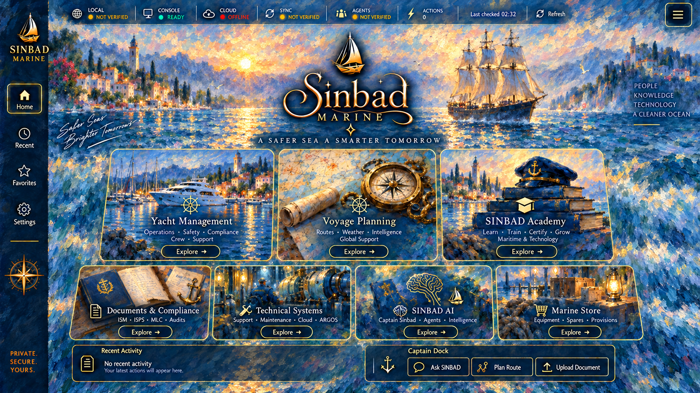
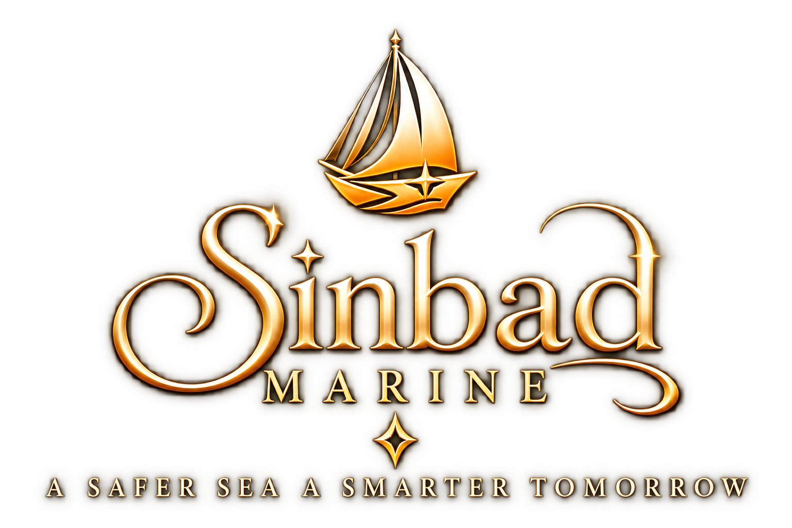

Yacht Management
Yat, ekip, kayıt ve özel medya çalışma alanlarına tek yerden erişin.
Choose a section, then explore its existing layers. Only navigation works here; records, AI and operational services are disconnected.


Fleet · Crew · Captain Logbook · Camera & Media
Yat, ekip, kayıt ve özel medya çalışma alanlarına tek yerden erişin.
Control evidence, approved knowledge and document submissions from one disciplined workspace.
| Document name | Category | Type | Version | Status | Last updated | Actions |
|---|---|---|---|---|---|---|
| No verified records loadedConnect an authorized source in Document Vault. SINBAD will not infer compliance from missing evidence. | ||||||
Tekne ayrıntıları, kapasite bilgileri ve makine kayıtları için yerel filo sicili.
Temel kimlik, boyut ve operasyon kapasitesini tek bir düzenli kayıtta tutun.
En yeni kayıt ilk sırada gösterilir.
Mürettebat kimliği, iletişim bilgileri ve kritik belge süreleri için düzenli yerel sicil.
Kimlik, görev, iletişim ve süre sonu bilgilerini eksiksiz kaydedin.
Yaklaşan süre sonları kayıt kartlarında görünür.
Search stored routes and reusable passage sequences.
Stored route data and existing filters remain authoritative.
Sailing directions, Lists of Lights, Tide Tables, Radio Signals and Notices to Mariners.
Upload and manage the publications already held in the authorized local library.
A controlled local archive for chart number, region and edition-tagged files.
Use tags for chart number, region, edition and correction status.
Sinbad Marine uses Atlas Cloud as the primary document vault.
Upload once. Access securely from every authorized device.
workspace-uuid/folder/file; the current cloud plan may limit each file to 50 MB.Yetkili çalışma alanı için görünür, kullanıcı kontrollü özel medya kaydı.
Media remains private to the authorized workspace unless it is separately submitted and approved for sharing.
Yerel saat, UTC ve isteğe bağlı konum ile sesli ya da yazılı operasyon taslakları.
0 entries
Starts a visible audio/video recording with the rear camera where available. It does not contact emergency services or send anything automatically.
Your position is read only after you grant permission and is never published automatically.
Grant location permission to prepare nearby marinas, anchorages, coastal references, charts and publications.
Coastal places, marinas and services along the Turkish Aegean and Mediterranean.
Search islands, historical sites, marinas, fuel stations and harbour master offices.
Local operational references; always verify official sources.
Local search across stored metadata and text-note content.
SAME SCREENS. A SHORT TOUR.
84 seconds · English titles · Silent · In development / Interface demo
SINBAD MARINE
This isolated demo follows the repository’s existing home, Yacht Management, Voyage Planning and Documents & Compliance screens, with empty subpages. It does not demonstrate operational readiness.
Academy content, Owner Console, administrative tools, private projects, crew records, uploads, sensors, live AI, purchases and service connections are omitted. Unavailable entries are omitted from navigation.
Founder: Captain Varol Çolak · 34 years at sea. SINBAD Marine is in development.
varol@sinbad-marine.com